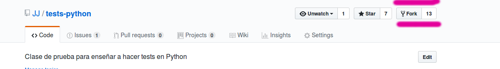
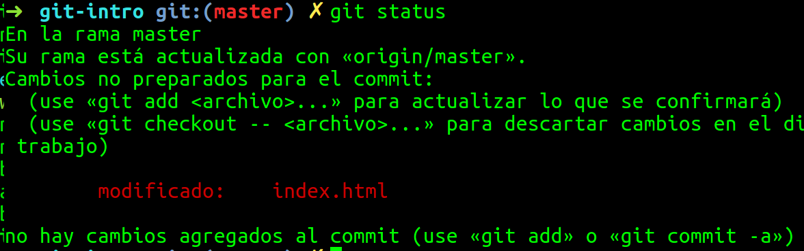

Git para todo el mundo
@jjmerelo para Granada Geek
git:
sistema de control
de fuentes
distribuido
Código en repositorios
Descarga git
Es software libre
Usa GitHub
O GitLab, o BitBucket
Crea un repositorio
.gitignore → lenguaje que se va a usar
¡Es software libre!
⇒ Elige licencia
Describe tu proyecto
README.md
Markdown FTW
Clona el repo
git clone https://github.com/nick/nombre-repo¡Has creado un fork!
Crea forks en GitHub
Una vez clonado...
cd nombre-repogit statusls -aO haz un fork de otro en GitHub
git clone git@github.com:minick/git-intro.git
git remote add upstream https://github.com/JJ/git-intro.git
Configura git: ~/.gitconfig
[user]
email = jjmerelo@gmail.com
name = JJ Merelo
[push]
default = matching
[core]
editor = emacsConfigura por línea de órdenes
git config --global alias.st statusConfigura la línea de órdenes

Usa Oh-My-Zsh
O Bash-it o Oh-my-Fish
Cambiando ficheros
Comprobando el estado
git commit -am "Esto ha cambiado"Sincronizando hacia abajo
git pullSincronizando hacia arriba
git pushgit push origin master
git pull upstream master
← upstream
→ origin
Nuevos ficheros
git add nombre-del-fichero.mdgit add .